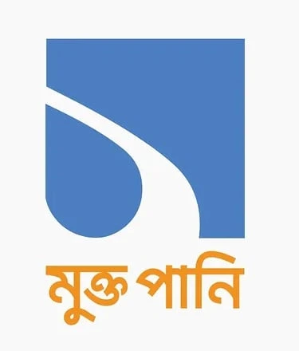
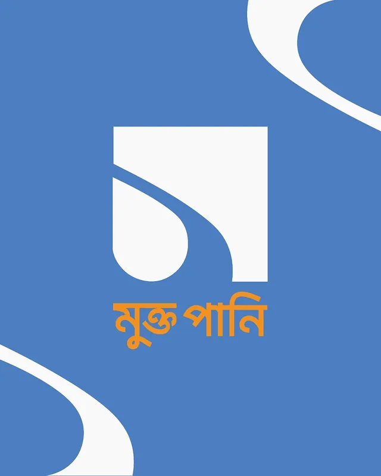
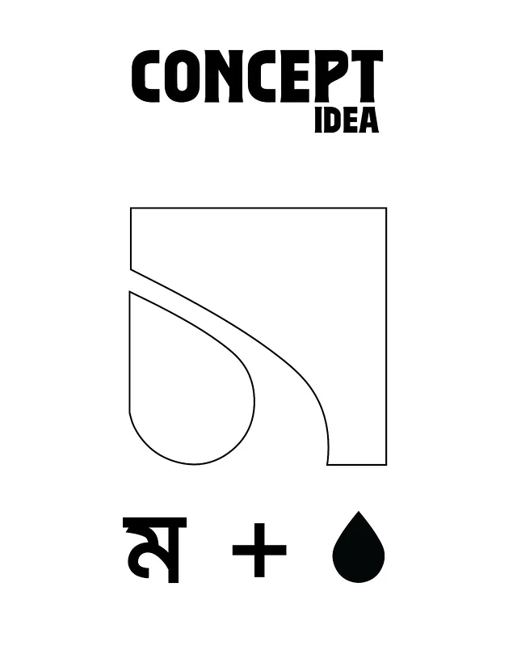
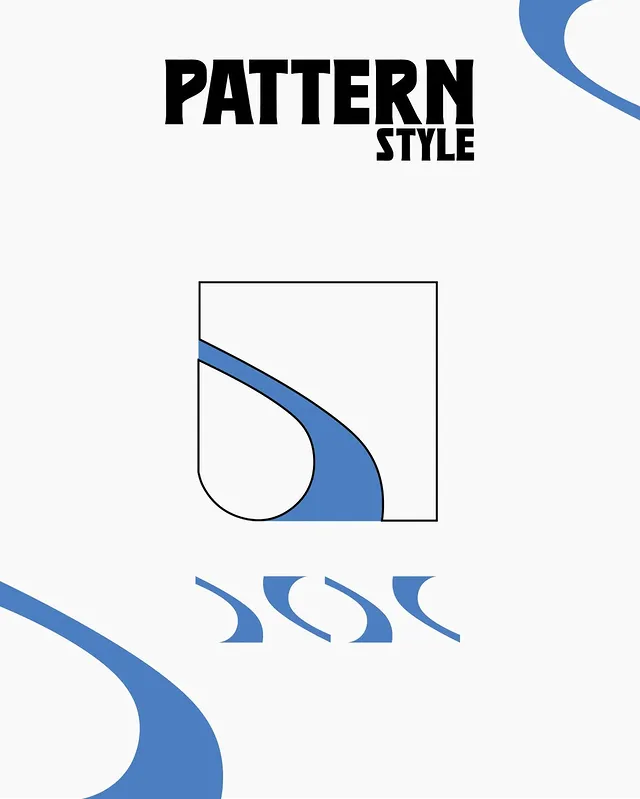
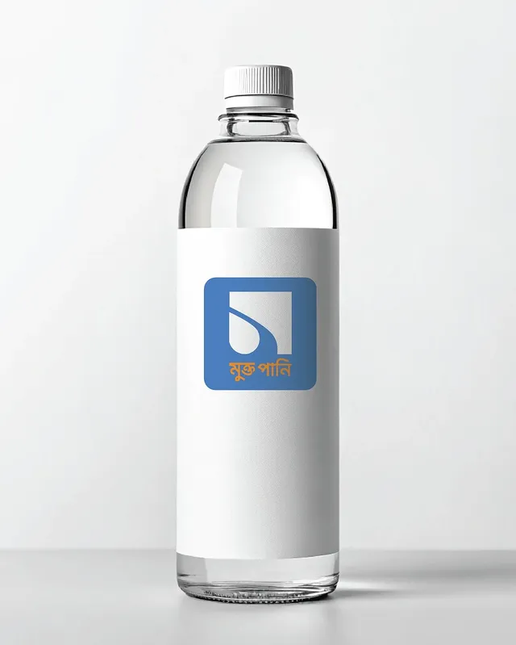
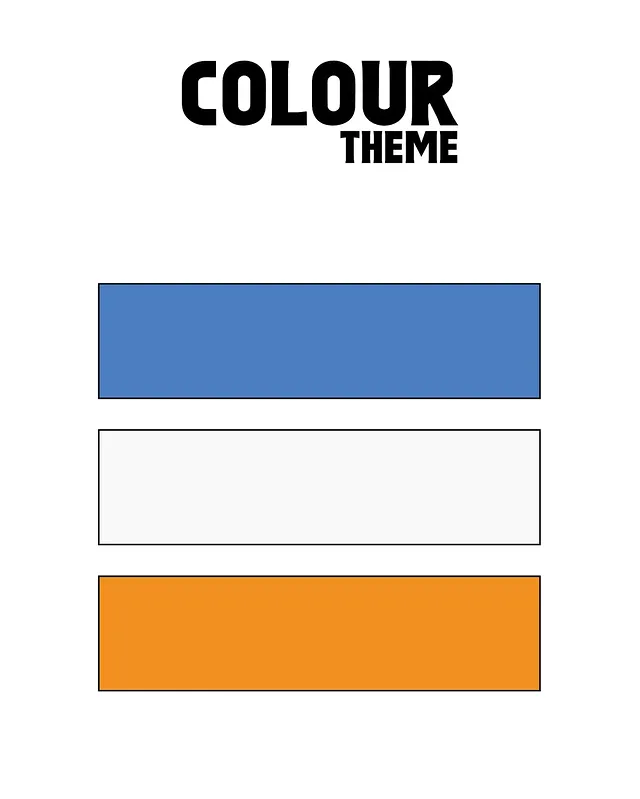
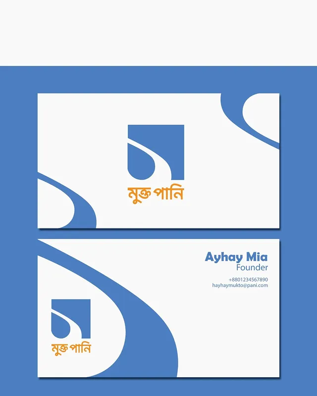
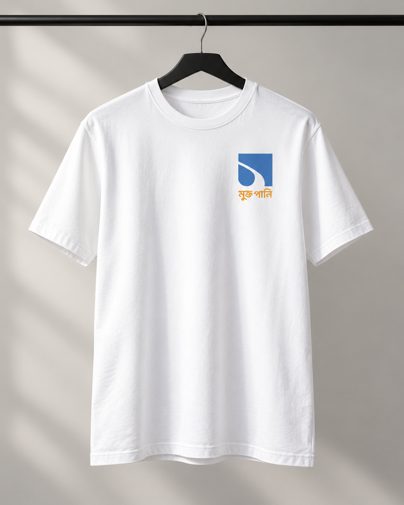
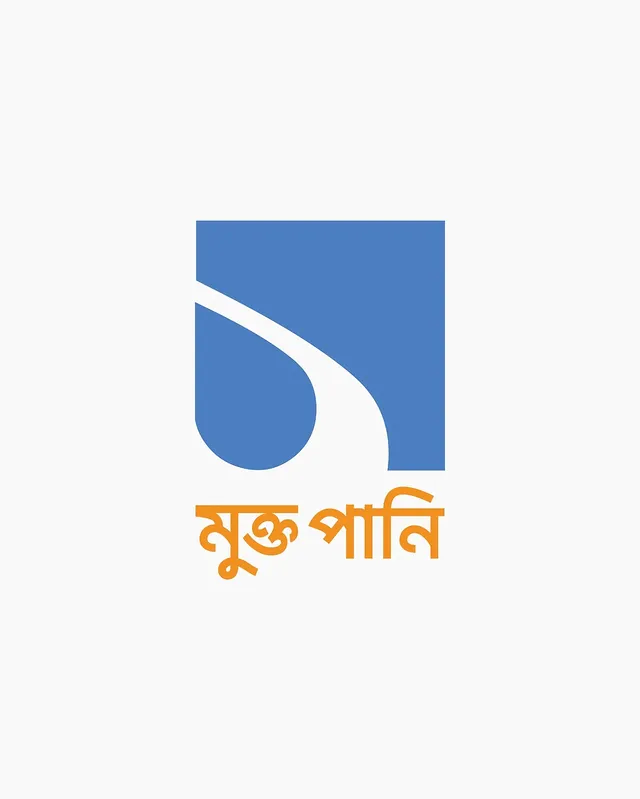

Brand identity · Logo and applications
Mukto Pani
A visual identity for Mukto Pani, a community-driven clean water project by JCI Dhaka Imperial, a local chapter of JCI Bangladesh.

About the project
Clean water.
Community-led change.
Mukto Pani is a clean water initiative by JCI Dhaka Imperial, a local chapter of JCI Bangladesh, serving residents of the Match Factory slum with safe drinking water. The project brings sustainable water purification together with youth-led custodianship and community empowerment.
Led by Local President Syed Shafayat Karim, the initiative was recognized as a Top 3 Project in the Grassroots Innovation category at ASPAC 2025, the JCI Asia-Pacific Conference.
My contribution focuses on the logo and visual identity for this community initiative.
The concept sheet combines the Bengali letter ম with a water droplet. A sweeping white curve sits inside a blue square, creating a compact symbol with a fluid movement that carries into the wider graphic language.
Blue, white and orange form the supporting palette. Curved patterns extend the mark across a bottle label, business stationery and a T-shirt application, demonstrating how a single visual gesture can connect the identity across formats.
- Initiated by JCI Dhaka Imperial · JCI Bangladesh
- Top 3 · Grassroots Innovation · ASPAC 2025
- Bengali letter and droplet concept
- Blue, white and orange palette
- Pattern, stationery and product mockups
Process & applications
The full presentation.







